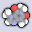
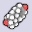

{kind=link}
|
|
Interactive and Innovative Molecular Graphics
QuteMol is an open source (GPL), interactive, high quality molecular visualization system. QuteMol exploits the current GPU capabilites through OpenGL shaders to offers an array of innovative visual effects. QuteMol visualization techniques are aimed at improving clarity and an easier understanding of the 3D shape and structure of large molecules or complex proteins.
- Real Time Ambient Occlusion
- Depth Aware Silhouette Enhancement
- Ball and Sticks, Space-Fill and Liquorice visualization modes
- High resolution antialiased snapshots for creating publication quality renderings
- Automatic generation of animated gifs of rotating molecules for web pages animations
- Real-time rendering of large molecules and protein (>100k atoms)
- Standard PDB input
- Quick installers for Win and Mac OS X (intel) (new!)
- Support as a plugins of the NanoEngineer-1 the modeling and simulation program for nano-composites (new!)
QuteMol was developed by Marco Tarini and Paolo Cignoni of the Visual Computing Lab at ISTI - CNR
 |
Links |
||
|
Download QuteMol! v 0.4.1 - 6 Jun 2007 (whatsnew.txt)
|
|||
| QuteMol project page
and forums on | |||
|  | See a few screenshots of the visual effects
featured in QuteMol. |
||
|  | See a few side to side comparisons between typical (state-of-the-art) molecular space-fill real-time renderings and QuteMol ambient occlusion enhanced renderings. | ||
| Remember that QuteMol is citeware: if you use images obtained with it then you should always cite QuteMol, especially in websites, scientific papers, books, manuals, etc. How to cite. | |||
| This paper, presented
at IEEE 2006 Visualization conference,
describes a few of the QuteMol tricks. Abstract:The paper presents a set of combined techniques to enhance the real-time visualization of simple or complex molecules (up to order of 10^6 of atoms) in space fill mode. [more] The proposed approach includes an innovative technique for efficient computation and storage of an ambient occlusion terms, a small set of GPU accelerated procedural impostors for space-fill and ball-and-stick rendering, and novel edge-cueing techniques. As a result, the user's understanding of the three-dimensional structure under inspection is strongly increased (even for still images), while the rendering still occurs in real time. [hide] [hide] |
|||
| A quick troubleshooting guide covering the most common problems reported by QuteMol users. | |||
| The slides that have been used to present the CG techinques
used by QuteMol at the IEEE 2006 Visualization conference - 3 Nov 2006. You can also see the quick (80 secs) preview slides. |
|||
 |
 | ||